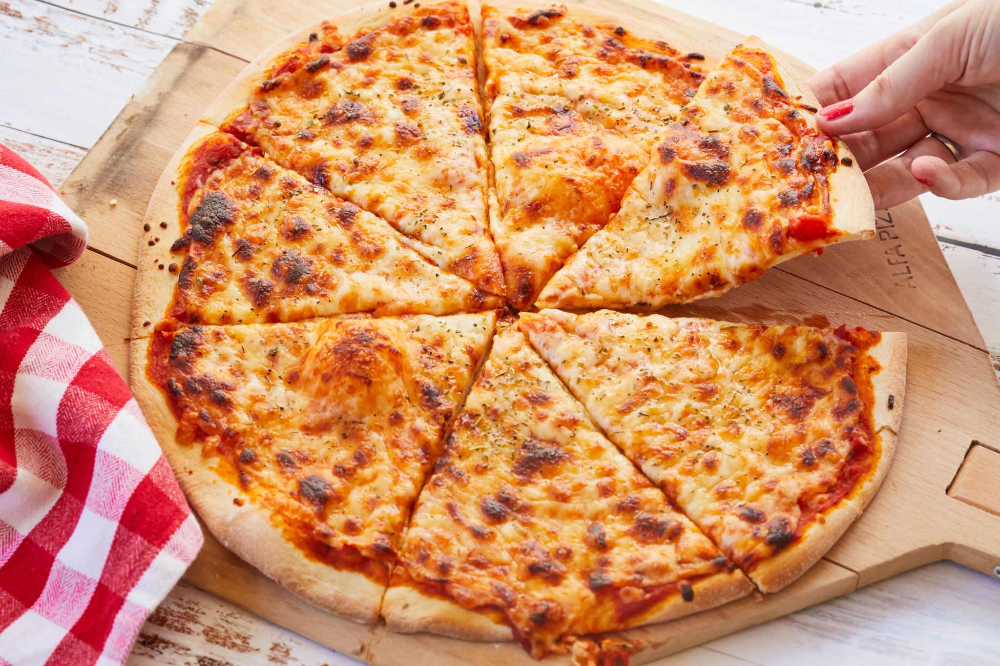

David's Recipes

NY-Style Pizza
Save money by making this delicious NY-Style Pizza at home.
After the initial cost of supplies (i.e. Pizza stone/steel, pizza peel),
you can make this recipe at home for less than $5.00. The wife and I make this
recipe once or twice a week. This recipe requires some knowledge of stretching pizza dough
and using a pizza peel.
Supplies:
- Pizza stone or steel (I use
California Pizza Stone brand)
- Pizza peel (can be purchased on Amazon or other food supply stores)
- Blender, mixer, or other vegetable processing device
- Food Scale
Ingredients (Makes 2 12" pizzas)
Dough:
- 430g Flour
- 270g Water
- 5g Kosher salt
- 3 tspn Olive oil
- 4g Active yeast (NOT NUTRIONAL!)
Sauce:
- Can of unsalted/unsweeted tomatoes
- 6oz Tomato paste
- 5g Kosher salt
- 1 tspn Black pepper
- Slice of onion (optional)
- 1 tspn Minced garlic (optional)
Other:
- 1lb Shredded mozzarella
Instructions:
Preparing the dough:
For the best taste, allow dough to cold ferment in the fridge for 48-72 hours
prior to cooking.
- Mix flour, olive oil, and salt together in a mixing bowl
- In a separate bowl/container, mix lukewarm water, sugar, and yeast
together
- Combine the two bowls and mix together with a fork (I find forks more
effective without a dough mixer)
- Once the dough has formed a solid mass, place the mixture on the counter
and begin kneading the dough until smooth
- Once the dough is done, split into 2 equal balls of dough
- Roll the dough into balls, oil 2 bowls or a tray to prevent sticking,
place into separate bowls or on a tray and cover.
- Let ferment for 48-72 hours in the fridge
While sacrificing flavor, you can make the pizza immediately by letting them ferment on counter
for ~1 hour
Prep and bake:
- Place pizza stone or steal in empty oven on the bottom rack and preheat oven to
500-520°F and let heat for 60-90 minutes
- Blend sauce ingredients until desired smoothness
- Rub flour onto the surface of the pizza peel to prevent the dough from sticking
- Cover the pizza dough in flour to prevent sticking and stretch evenly to about 12"
depending on the size of pizza peel and stone/steel
- Place the dough on floured pizza peel
- With a large spoon or ladle, distribute desired amount of pizza sauce
- Sprinkle shredded mozzarella over the sauced area
- Add additional toppings if desired
- Transfer pizza from peel to stone and let bake for 7-10 minutes or until crust has risen and
reached a golden brown
- Use pizza peel to remove pizza from stone, cut, and serve